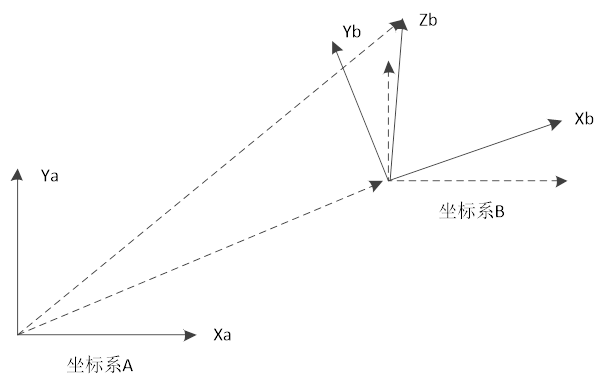

|
类型 |
机械手计算指令 | ||||||
|
描述 |
手动计算坐标系旋转后的坐标值。
使用时需控制器当前存在机械链接。 base轴，可以是虚拟轴与关节轴中的任意一个；base轴无机械手链接，会报1025的错误。 多种机械手叠加的情况，根据base轴来识别是哪个机械手模式。如果base（axis_1,axis_2）中的axis_1是模式1的机械手轴，axis_2是模式2的机械手轴，那么结果是模式1的机械手进行坐标计算，即以base轴的顺序来计算。 | ||||||
|
语法 |
FRAME_ROTATE2(tablein, tableout, dir[, x,y,z[, rx,ry,rz]]) ret = FRAME_ROTATE2(tablein, tableout, dir[, x,y,z[, rx,ry,rz]]) tablein：转换前，填写的坐标存储table位置 tableout：转换后，输出的坐标存储table位置 dir：方向选择
X：坐标系B沿X^的平移距离 Y：坐标系B沿Y^的平移距离 Z：坐标系B沿Z^的平移距离 RX：坐标系B沿X^的旋转的弧度 RY：坐标系B沿Y^的旋转的弧度 RZ：坐标系B沿Z^的旋转的弧度 [, x,y,z[, rx,ry,rz]]：不填时使用当前的缺省rotate参数 Ret：返回成功与否；-1-成功，0-未成功  | ||||||
|
适用控制器 |
通用 | ||||||
|
例程 |
例一 以FRAME=2，DETLA为例；对其绕X轴旋转90度。 BASE(0,1,2) RAPIDSTOP ATYPE = 1,1,1 UNITS=3600/360,3600/360,3600/360 DPOS=0,0,0 BASE(6,7,8) ATYPE = 0,0,0 TABLE(0,40,10,32,85,3600,3600,3600, 0, 0, 0 ) UNITS = 100,100,100 BASE(0,1,2) CONNFRAME(2,0,6,7,8) WAIT LOADED FOR i=0 TO 2 TABLE(100+i)=DPOS(i+6) NEXT BASE(6,7,8) FRAME_ROTATE(0,0,0,PI/2,0,0) BASE(6,7,8) FRAME_ROTATE(0,0,0,PI/2,0,0) WAIT LOADED ret=FRAME_ROTATE2(100,200,1,0,0,0,PI/2,0,0) IF ret=-1 THEN ?"计算值" ?"DPOS(6)=",TABLE(200) ?"DPOS(7)=",TABLE(201) ?"DPOS(8)=",TABLE(202) ?"比较值" ?"DPOS(6)比较",TABLE(200)-DPOS(6) ?"DPOS(7)比较",TABLE(201)-DPOS(7) ?"DPOS(8)比较",TABLE(202)-DPOS(8) ENDIF
输出行输出结果： 计算值 DPOS(6)=0 DPOS(7)=-58.1400 DPOS(8)=0.0000 比较值 DPOS(6)比较 0 DPOS(7)比较 0 DPOS(8)比较 0.0000
例二 以FRAME=1，SCARA为例，对其相对于Z轴旋转90度。 BASE(0,1,2,3) RAPIDSTOP ATYPE = 1,1,1,1 UNITS=3600/360,3600/360,3600/360,1000 DPOS=0,0,0,0 BASE(6,7,8,9) ATYPE = 0,0,0,0 TABLE(0,100,100,3600,3600,3600) UNITS = 100,100,3600/360,1000 BASE(0,1,2,3) CONNFRAME(1,0,6,7,8,9) WAIT LOADED FOR i=0 TO 3 TABLE(100+i)=DPOS(i+6) NEXT BASE(6,7,8,9) FRAME_ROTATE(0,0,0,0,0,PI/2) WAIT LOADED RET=FRAME_ROTATE2(100,200,1,0,0,0,0,0,PI/2) IF RET=-1 THEN ?"计算值" ?"DPOS(6)=",TABLE(200) ?"DPOS(7)=",TABLE(201) ?"DPOS(8)=",TABLE(202) ?"DPOS(9)=",TABLE(203) ?"比较值" ?"DPOS(6)比较",TABLE(200)-DPOS(6) ?"DPOS(7)比较",TABLE(201)-DPOS(7) ?"DPOS(8)比较",TABLE(202)-DPOS(8) ?"DPOS(9)比较",TABLE(203)-DPOS(9) ENDIF
输出行输出结果： 计算值 DPOS(6)=-0.0000 DPOS(7)=-200 DPOS(8)=0 DPOS(9)=0 比较值 DPOS(6)比较 -0.0000 DPOS(7)比较 0 DPOS(8)比较 0 | ||||||
|
相关指令 |